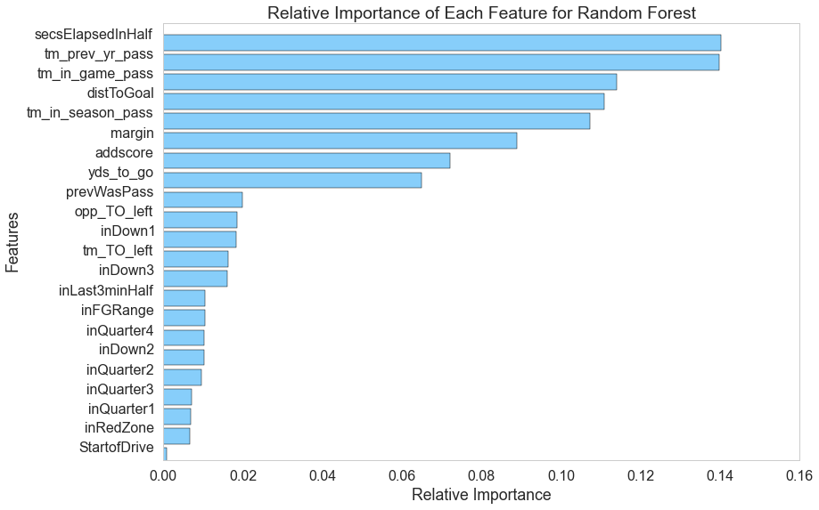
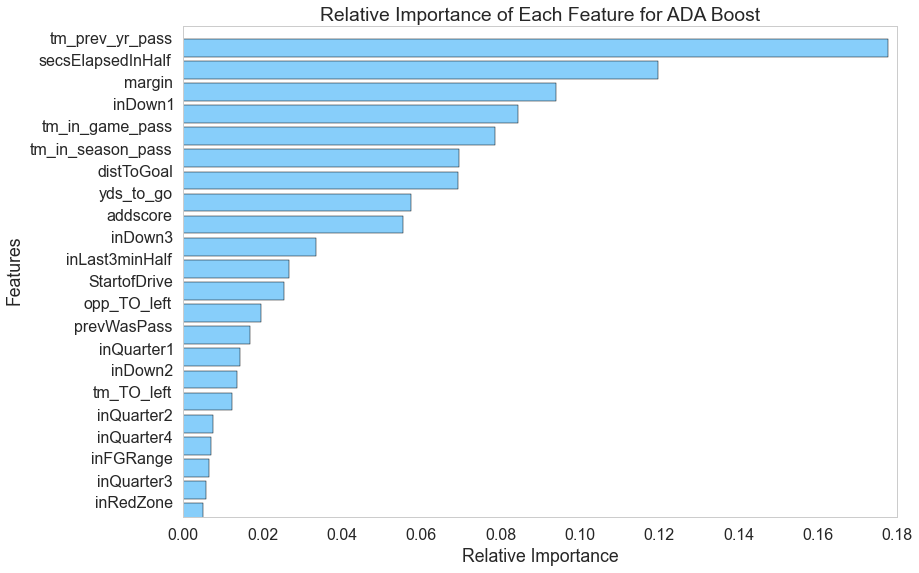
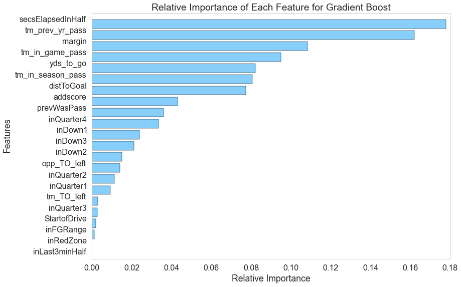

Analysis and Results
Training and Testing a Variety of Classifiers
Once we had our data scraped and cleaned, we turned to a few different classifiers in an attempt to maximize our performance. Before we began classifying, however, we had to choose on a measure for performance so that we could compare our many classifiers. We began to consider the costs of misclassifying different types of plays, and we decided based on our domain knowledge that intuitively, misclassifying passes as runs would be more costly than misclassifying runs as passes; this is because moving defenders up into the box leaves the defense vulnerable to being beaten over the top for a deep pass, and runs are much less capable of making large gains than passes, even when the defense is caught off-guard. Unfortunately, after considering the problem more quantitatively, we realized that there was no easy way to quantify the cost of different misclassifications without having data on whether defenses had correctly predicted the offense's play call on any given play, and this dataset simply does not exist. Therefore, while this might be an interesting opportunity for future work, we opted to simply evaluate our models by accuracy, thus weighting all misclassifications equally.
Moreover, we made the decision to make separate models for each year of data. We made this decision for a couple reasons: first, the league environment has been trending more and more towards passing in recent years, and making separate models for each year captures this league-wide movement. Second, some more complex models have a training complexity that scales very quickly with the number of training samples; for example, an SVM classifier with a Gaussian kernel has a training time that scales quadratically with the number of samples, making it difficult to train on more than one year of data (each year contains roughly 35,000 plays). All accuracies reported below are based on using last season's data (2014) and generating separate training sets and test sets after performing cross-validation to choose hyperparameter values; to see the accuracies for a select few of our models for all years, please see the graph below the descriptions of each model. Without further ado, here are the models we used:
Baseline:
Before we started classifying, we came up with a couple baseline estimators. Our first baseline was to simply guess randomly on each play; this, of course, results in a 50% prediction accuracy and is a rough lower bound on classifier performance, since if a classifier performs worse than 50%, inverting all of its predictions would yield a greater-than-50% accuracy. The other baseline we came up with was to simply predict a pass on every play: passes were more common than runs and represented roughly 57% of our samples.
Logistic Regression:
The first classifier we started with was a basic logistic regression. We trained two models logistic regression models: one with lasso (L1) regularization, and another with ridge (L2) regularization. These classifiers performed similarly, with the L1 model predicting with 67% accuracy and the L2 model predicting with 66.7% accuracy. Thus, while we were able to improve on the best baseline by about 10%, we were not satisified and thus moved on to other predictors.
Support Vector Classification:
The next classifier we looked at was support vector classification. We trained two different SVMs: one with an RBF (Gaussian) kernel and one with a linear kernel. Despite being a little less complex, the linear SVM slightly outperformed the Gaussian SVM, scoring 61% accuracy compared to the Gaussian SVM's 60% accuracy. Note that both of these models were markedly worse than logistic regression. With this in mind, and remembering how successful ensemble classifiers were in the Netflix Prize competition, we moved on to ensemble-based classifiers.
Random Forest:
Next, we moved on to using random forest classifiers. Random forest performed much better than the other classifiers we tried, giving an accuracy of 68.6% on the 2014 test data. With this improvement, we hoped we could crack the 70% mark on a future classifier, so we moved on to other classifiers.
AdaBoost:
After random forest, we moved on to using an AdaBoost classifier. This classifier beat out our random forest model slightly, reporting an accuracy of 69.1% on the test dataset.
Gradient Boosting:
The final classifier we used was the gradient-boosting classifier. With this classifier, we were finally able to break our goal of 70% accuracy, as the gradient-boosting model reported an accuracy on the 2014 testing data of 70.3%!
Ensemble Classifier Feature Importance
Random Forest
This classifier is interesting in that it can tell us how important each feature was relative to the others; inspecting this aspect of the model, we generated this graph explaining the feature importances.
{kind=link}
AdaBoost
Just like the random forest model, AdaBoost is able to give relative feature importances, as shown here.
{kind=link}
Gradient Boosting
Just like the random forest and AdaBoost classifiers, the gradient-boosting model provides relative feature importances, so we can inspect the model and see what it finds most important.
{kind=link}
Moreover, we generated ROC curves for each of the models to demonstrate the relative success of each model; this gives us a great way to visualize the differences in the models' performances:
ROC Plot
{kind=link}
Finally, you may be wondering how performance on the 2014 data compares to our models' performances in other years. To visualize these differences, we generated the graph below for a few select models. Interestingly, most of the models are very consistent from year to year, with the exception of the linear SVM, which varies wildy from year to year, even dipping below 50% in 2006 and 2012. Most importantly, though, is that our models' relative performances remained the same every year, with the gradient-boosting model outperforming the random forest model, the random forest model outperforming the logistic regression model, and all three of those models outperforming the linear SVM.
{kind=link}